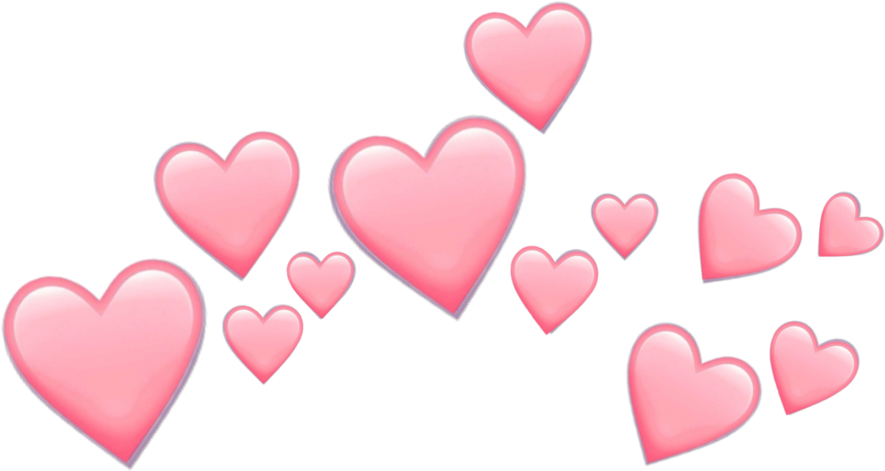

About
Too Good To Be True is a short film about happiness. Inspired by aesthetic youtubers who combine lo-fi music with calming visuals, Too Good To Be True perfectly encaptures that giddy feeling we have when we are hanging out with friends, or relaxing, or exploring the city. But sometimes happiness is too good to be true, as the title of the film suggests. Sometimes happiness is fleeting. Sometimes it is only for a moment. Then poof! It is gone. Too Good To Be True highlights this momentary nature of happiness, but also emphasises the importance of capturing these moments, so that in instances where we are feeling lonely or sad or useless, we can refer back to these memories to cheer ourselves up.

Cast

Deborah
Sarah
Deborah and Sarah are New York University Abu Dhabi students who collaborated to create a short film for a 30 minute film festival taking place for their Communications Lab class. They are both majoring in Interactive Media. Both Sarah and Deborah acted as directors and cinematographers for the film. Deborah was in charge of editing the film. They are both beautiful and amazing. They are both the best. They are everything good about the universe